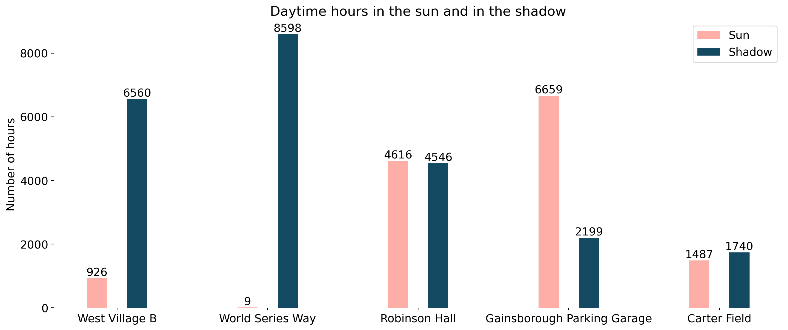

In this notebook I will train models to investigate whether shadow influences the temperature differences between sensors. The first step is to focus on sensors that have enough sun and shadow hours.
Question to answer
Does sun exposure/shadow of the sensor accounts for reading differences?
Opening the shadow data
from pathlib import Pathimport pandas as pdimport numpy as npimport sysimport cmcrameri.cm as cmcimport statsmodels.formula.api as smffrom statsmodels.iolib.summary2 import summary_colsys.path.append("/Users/legariapena.j/Documents/open-sensing-analysis/open-sensing-analysis/src/time_series")from series_aligner import _prepare_resampled_series#Import the Distribution plotter.sys.path.append("/Users/legariapena.j/Documents/open-sensing-analysis/open-sensing-analysis/src/visualization")from distribution_plotter import DistributionPlotterPARENT_DATA_PATH = Path("/Users/legariapena.j/Documents/open-sensing-analysis/open-sensing-analysis/notebooks/2026_11_13_shadow_temp_correlations/data")PATH_SHADOW_DATA = PARENT_DATA_PATH/"sensor_shadows.json"shadow_data = pd.read_json(PATH_SHADOW_DATA)shadow_data.head()
sensor_name
timestamp
shadow_radius_0m
shadow_radius_10m
shadow_radius_50m
shadow_radius_100m
shadow_radius_200m
shadow_radius_300m
0
Boston West Village B
2024-11-15 16:00:00
0
0.211356
0.278776
0.277620
0.357219
0.414901
1
Boston West Village B
2024-11-15 17:00:00
0
0.211356
0.353219
0.332050
0.384472
0.428886
2
Boston West Village B
2024-11-15 18:00:00
0
0.264984
0.470618
0.446016
0.373684
0.418665
3
Boston West Village B
2024-11-15 19:00:00
0
0.211356
0.307330
0.347405
0.273970
0.333251
4
Boston West Village B
2024-11-15 20:00:00
0
0.211356
0.286934
0.254385
0.176078
0.177021
SENSOR_NAMES =list(shadow_data["sensor_name"].unique())shadow_by_sensor = {}for i inrange(0,len(SENSOR_NAMES)): sensor_name = SENSOR_NAMES[i] shadow_by_sensor[sensor_name] = shadow_data[shadow_data["sensor_name"] == sensor_name]def filter_sun_hours(shadow_series, timestamp_list): n =len(shadow_series) filtered_timestamps = [] filtered_shadow_series = []for i inrange(0,n):if(shadow_series[i] ==1): filtered_timestamps.append(timestamp_list[i]) filtered_shadow_series.append(shadow_series[i])return filtered_timestamps, filtered_shadow_seriesdef filter_shadow_hours(shadow_series, timestamp_list): n =len(shadow_series) filtered_timestamps = [] filtered_shadow_series = []for i inrange(0,n):if(shadow_series[i] ==0): filtered_timestamps.append(timestamp_list[i]) filtered_shadow_series.append(shadow_series[i])return filtered_timestamps, filtered_shadow_seriessensor_hour_vs_shadow_data = {}for name in SENSOR_NAMES: shadow_series =list(shadow_by_sensor[name]["shadow_radius_0m"]) time_stamp_series =list(shadow_by_sensor[name]["timestamp"]) timestamps_sun, sun_data = filter_sun_hours( shadow_series = shadow_series, timestamp_list = time_stamp_series ) timestamps_shadow, shadow_hours_data = filter_shadow_hours( shadow_series = shadow_series, timestamp_list = time_stamp_series ) sensor_hour_vs_shadow_data[name] = {} sensor_hour_vs_shadow_data[name]["sun_hours"] =len(sun_data) sensor_hour_vs_shadow_data[name]["shadow_hours"] =len(shadow_hours_data)distribution_plotter = DistributionPlotter()sensor_labels = [sensor_name.replace("Boston ", "") for sensor_name in SENSOR_NAMES]sun_hours = [sensor_hour_vs_shadow_data[name]["sun_hours"] for name in SENSOR_NAMES]shadow_hours = [sensor_hour_vs_shadow_data[name]["shadow_hours"] for name in SENSOR_NAMES]hour_count_bars = [ {"x": sensor_labels,"y": sun_hours,"color_bars": cmc.batlow(0.85),"label": "Sun" }, {"x": sensor_labels,"y": shadow_hours,"color_bars": cmc.batlow(0.15),"label": "Shadow" }]ax = distribution_plotter.multi_distribution_plotter( hour_count_bars, width =14, height =6, title ="Daytime hours in the sun and in the shadow", variable_name ="Number of hours", values_on_top =True, decimals =0)

World Series Way is almost always in the shadow, so it can be used as a reference sensor. Then, we have two sensors.
We’ll drop Carter field and West Village B. as they have fewer hours in the sun.
We’ll keep Robinson Hall and Gainsborough Parking garage.
Opening the Sensor Data
SENSOR_FILES = {"Boston World Series Way": "world_series_way.csv","Boston Robinson Hall": "robinson_hall.csv","Boston Gainsborough Parking Garage": "gainsborough_parking_garage.csv"}all_sensors_data = {}for name in SENSOR_FILES: temperature_df = _prepare_resampled_series( df = pd.read_csv(PARENT_DATA_PATH/SENSOR_FILES[name]), variable_name ="temperature", time_column ="timestamp", sampling_interval ="1h" ).to_frame() all_sensors_data[name] = {"df": temperature_df,"shadows": shadow_by_sensor[name].set_index("timestamp").reindex(temperature_df.index) }all_sensors_data["Boston World Series Way"]["df"].head(10)
temperature
timestamp
2024-11-15 17:00:00
14.105000
2024-11-15 18:00:00
NaN
2024-11-15 19:00:00
NaN
2024-11-15 20:00:00
15.221250
2024-11-15 21:00:00
13.826667
2024-11-15 22:00:00
12.935833
2024-11-15 23:00:00
12.430833
2024-11-16 00:00:00
11.884167
2024-11-16 01:00:00
11.338333
2024-11-16 02:00:00
10.710000
Computing the differences
def get_included_indices(ref_values, tested_values): n =len(tested_values) included_indices = [] filtered_values = []for i inrange(0,n): tested_value = tested_values[i]if(tested_value in ref_values): included_indices.append(i) filtered_values.append(tested_value)return included_indices, filtered_valuesREFERENCE_SENSOR ="Boston World Series Way"ANALYZED_SENSORS = ["Boston Robinson Hall", "Boston Gainsborough Parking Garage"]#Let's find shared timestamps.reference_timestamps =set(all_sensors_data[REFERENCE_SENSOR]["df"].index)for name in ANALYZED_SENSORS: analyzed_sensor_timestamps =list(all_sensors_data[name]["df"].index) included_indices, filtered_values = get_included_indices(reference_timestamps, analyzed_sensor_timestamps) all_temperature_values =list(all_sensors_data[name]["df"]["temperature"]) temperature_differences = []for i inrange(0,len(included_indices)): index = included_indices[i] timestamp = analyzed_sensor_timestamps[index]#Search for the timestamp in the reference data reference_temperature = all_sensors_data[REFERENCE_SENSOR]["df"].loc[timestamp, "temperature"] compared_temperature = all_temperature_values[index] temperature_delta = compared_temperature - reference_temperature temperature_differences.append(temperature_delta) all_sensors_data[name]["temperature_diffs"] = temperature_differences all_sensors_data[name]["diff_timestamps"] = filtered_values shadow_values_0m =list(all_sensors_data[name]["shadows"]["shadow_radius_0m"]) filtered_shadows = [shadow_values_0m[x] for x in included_indices] all_sensors_data[name]["filtered_shadows_0m"] = filtered_shadows
Splitting day and night hours
MODEL_RADII = [0, 50, 100]shadow_columns = [f"shadow_radius_{radius}m"for radius in MODEL_RADII]hour_counts = {}for name in ANALYZED_SENSORS: model_df = all_sensors_data[name]["shadows"].loc[all_sensors_data[name]["diff_timestamps"], shadow_columns] model_df["temperature_diff"] = all_sensors_data[name]["temperature_diffs"] model_df = model_df.dropna(subset = ["temperature_diff"]) model_df["date"] = model_df.index.tz_localize("UTC").tz_convert("America/New_York").date is_day = model_df["shadow_radius_0m"].notna() all_sensors_data[name]["day_hours"] = model_df[is_day] all_sensors_data[name]["night_hours"] = model_df[~is_day] hour_counts[name] = {"day hours in the sun": int((model_df["shadow_radius_0m"] ==1).sum()),"day hours in the shadow": int((model_df["shadow_radius_0m"] ==0).sum()),"night hours": int((~is_day).sum()) }pd.DataFrame(hour_counts).T
\(T_{s,t}\) is the hourly mean temperature (°C) of sensor \(s\), Robinson Hall or Gainsborough Parking Garage, at hour \(t\).
\(T_{\text{ref},t}\) is the hourly mean temperature (°C) of World Series Way at the same hour.
\(S_{s,t}(r)\) is the shadow value of sensor \(s\) at hour \(t\): the share of direct sunlight in a circle of radius \(r\) = 0, 50 or 100 m (0 = all shadow, 1 = all sun).
\(\beta\) is the change in the difference, in °C, from all shadow to all sun. At 0 m, it is how much warmer the sensor reads in a sun hour than in a shadow hour.
\(\varepsilon_{s,t}\) is the error. Its standard errors are grouped by date (Boston time), because hours of the same day share their weather.
The model is fit on day hours only, once per sensor and radius: 2 sensors × 3 radii = 6 models.
models_by_sensor = {}for name in ANALYZED_SENSORS: day_hours = all_sensors_data[name]["day_hours"] models_by_sensor[name] = []for radius in MODEL_RADII: day_hours_at_radius = day_hours.assign(shadow_value = day_hours[f"shadow_radius_{radius}m"]) model = smf.ols("temperature_diff ~ shadow_value", data = day_hours_at_radius).fit( cov_type ="cluster", cov_kwds = {"groups": day_hours_at_radius["date"]} ) models_by_sensor[name].append(model)print(name)print( summary_col( models_by_sensor[name], stars =True, model_names = [f"{radius} m"for radius in MODEL_RADII], info_dict = {"N": lambda m: f"{int(m.nobs)}"} ) )
Boston Robinson Hall
=============================================
0 m 50 m 100 m
---------------------------------------------
Intercept 0.8562*** 0.2066** -0.3996***
(0.0609) (0.0814) (0.1065)
shadow_value 1.7803*** 3.4381*** 4.3868***
(0.1335) (0.2517) (0.2940)
R-squared 0.1224 0.1401 0.1467
R-squared Adj. 0.1223 0.1399 0.1465
N 5124 5124 5124
=============================================
Standard errors in parentheses.
* p<.1, ** p<.05, ***p<.01
Boston Gainsborough Parking Garage
============================================
0 m 50 m 100 m
--------------------------------------------
Intercept 0.7497*** 0.4069*** 0.2832***
(0.0623) (0.0685) (0.0748)
shadow_value 2.2583*** 3.6133*** 3.9725***
(0.0875) (0.1431) (0.1599)
R-squared 0.1390 0.2240 0.1967
R-squared Adj. 0.1388 0.2239 0.1965
N 3990 3990 3990
============================================
Standard errors in parentheses.
* p<.1, ** p<.05, ***p<.01
Low-cost sensor networks assume that temperature differences between sensors reflect differences between neighborhoods. We show that direct sun on a sensor adds about 2 °C to its reading. In our Boston network, the hottest readings belong to the sensors that are most often in the sun. We base this on a shadow simulation of the city’s 3D model and on hourly readings from five sensors.